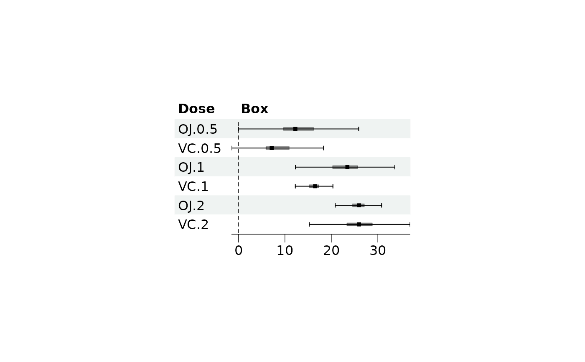
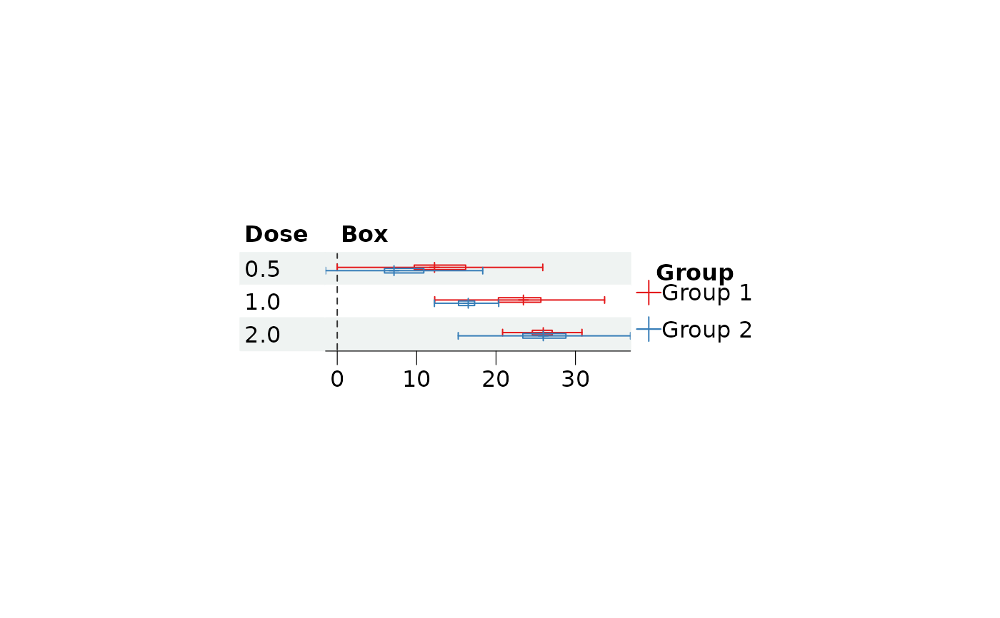

Create horizontal boxplot grob
Arguments
- est
Median value.
- lower
Lower whisker.
- upper
Upper whisker.
- lowhinge
Lower hinge, a standard whisker will be drawn if this is missing.
- uphinge
Upper hinge, a standard whisker will be drawn if this is missing.
- hinge_height
Height of the hinge, default is 0.2.
- pch
Numeric or character vector indicating what sort of plotting symbol to use. See
pointsGrob.- sizes
Size of the point estimation box, can be a vector or a list. The value is a multiple of one line of text, so
1draws a point as tall as thebase_sizeof the theme. The same scale applies to the summary diamond. Values are used as they are, unlessscale_sizesis used to read them as study weights; useful values are roughly between0.2and1.5, and a warning is given when the plot is drawn if they are outside0.1to2.- gp
Graphical parameters of
gpar. Please refer toforest_themefor more details.- gp_box
Graphical parameters passed to the hinge, this will be passed to
rectGrob. This does not support multiple groups.- t_height
Height of the whisker end vertices. If value is
NULL(default), no vertices will be drawn.- xlim
Limits for the x axis as a vector of length 2, i.e. c(low, high).
- nudge_y
Horizontal adjustment to nudge groups by, must be within 0 to 1.
Examples
library(grid)
# Function to calculate Box plot values
box_func <- function(x){
iqr <- IQR(x)
q3 <- quantile(x, probs = c(0.25, 0.5, 0.75), names = FALSE)
c("min" = q3[1] - 1.5*iqr, "q1" = q3[1], "med" = q3[2],
"q3" = q3[3], "max" = q3[3] + 1.5*iqr)
}
# Prepare data
val <- split(ToothGrowth$len, list(ToothGrowth$supp, ToothGrowth$dose))
val <- lapply(val, box_func)
dat <- do.call(rbind, val)
dat <- data.frame(Dose = row.names(dat),
dat, row.names = NULL)
dat$Box <- paste(rep(" ", 20), collapse = " ")
# Draw single group box plot
tm <- forest_theme(ci_Theight = 0.2)
p <- forest(dat[,c(1, 7)],
est = dat$med,
lower = dat$min,
upper = dat$max,
# sizes = sizes,
fn_ci = make_boxplot,
ci_column = 2,
lowhinge = dat$q1,
uphinge = dat$q3,
hinge_height = 0.2,
index_args = c("lowhinge", "uphinge"),
gp_box = gpar(fill = "black", alpha = 0.4),
style = tm
)
p

# Multiple group
# Prepare data
dat_oj <- dat[c(1, 3, 5),]
dat_vc <- dat[c(2, 4, 6), ]
dat <- data.frame(Dose = c(0.5, 1, 2))
dat$Box <- paste(rep(" ", 20), collapse = " ")
# Draw plot
tm <- forest_theme(ci_Theight = 0.2,
ci_pch = 3)
p <- forest(dat,
est = list(dat_oj$med, dat_vc$med),
lower = list(dat_oj$min, dat_vc$min),
upper = list(dat_oj$max, dat_vc$max),
fn_ci = make_boxplot,
ci_column = 2,
lowhinge = list(dat_oj$q1, dat_vc$q1),
uphinge = list(dat_oj$q3, dat_vc$q3),
hinge_height = 0.2,
index_args = c("lowhinge", "uphinge"),
style = tm
)
p
#> Warning: Grouped confidence intervals are likely to overlap: a point of `sizes` 0.4 is more than twice the gap between groups. Increase `nudge_y` or reduce `sizes`.
